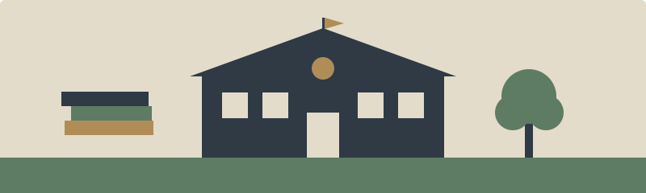

|
Luis Navarro |
Convivir y crecer bien en el colegio De qué trata este sitioEl colegio es el lugar donde pasamos buena parte del día, y también donde se ponen a prueba nuestros hábitos, nuestro trato con los demás y el conocimiento de nuestros derechos. Este sitio parte de una pregunta: ¿qué necesita un estudiante para sentirse bien, convivir sin violencia y saber qué puede exigir y qué debe cumplir? Las respuestas están organizadas en tres temas y una página que registra las fuentes. Los temasBienestar del estudiante Convivencia sin violencia Derechos y deberes Fuentes y verificación Mi proyecto de vida como estudiante técnicoEl bachillerato técnico combina la formación general con una preparación práctica que permite seguir estudiando o incorporarse al trabajo. Un proyecto de vida realista une metas con cuidado personal. Un método sencillo:
Una idea que guía todo el sitioNinguna meta personal justifica pasar por encima de otra persona. Estudiar, cuidarse y exigir derechos van de la mano con respetar a los demás y rechazar toda forma de discriminación. Elaborado por Luis Navarro · 2.º Técnico · Unidad Educativa San Esteban. Las fuentes de cada tema están al final de su página y reunidas en Fuentes y verificación. |